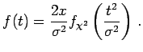

Chi-Quadrat-Verteilung
- 1. Dichte und Verteilungsfunktion:
- Es seien unabhängige, (0,1)-normalverteilte Zufallsveränderliche. Dann heißt die Verteilung der Zufallsveränderlichen
 -Verteilung mit dem Freiheitsgrad
-Verteilung mit dem Freiheitsgrad  . Ihre Verteilungsfunktion wird mit bezeichnet, die zugehörige Dichtefunktion mit . Es gilt:
. Ihre Verteilungsfunktion wird mit bezeichnet, die zugehörige Dichtefunktion mit . Es gilt:
- 2. Erwartungswert und Streuung:
-
- 3. Verteilung einer Summe von Zufallsveränderlichen:
- Sind X1 und X2 unabhängige Zufallsveränderliche, die je einer -Verteilung mit n bzw. m Freiheitsgraden genügen, so ist die Zufallsveränderliche -verteilt mit n + m Freiheitsgraden.
- 4. Dichtefunktionen bei verschiedenen Zufallsveränderlichen X:
- Sind
 unabhängige, ()-normalverteilte Zufallsveränderliche, so besitzt
unabhängige, ()-normalverteilte Zufallsveränderliche, so besitzt
|
|
|
(16.93) |
|
|
|
(16.94) |
|
|
 |
(16.95) |
- 5. Quantile:
- Für die Quantile der -Verteilung mit dem Freiheitsgrad m (s. Abbildung) gilt
Quantile der -Verteilung sind in der zugehörigen Tabelle Chi-Quadrat-Verteilung zu finden.